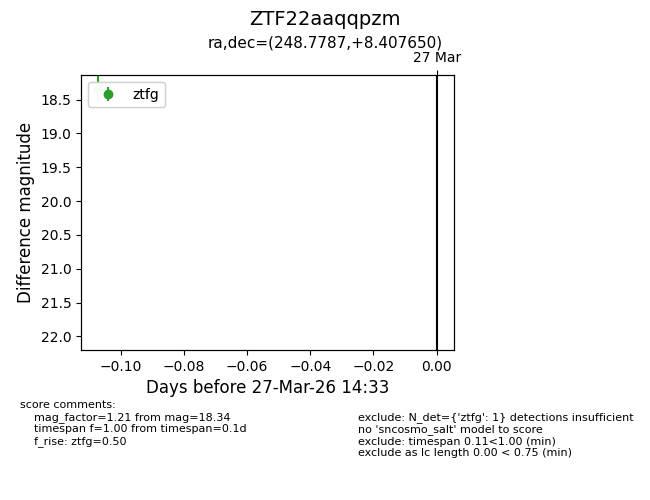
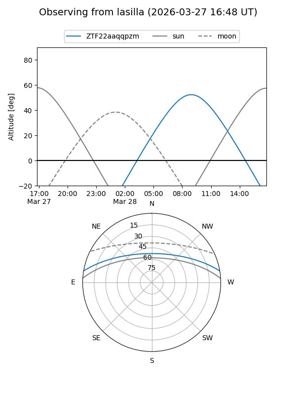
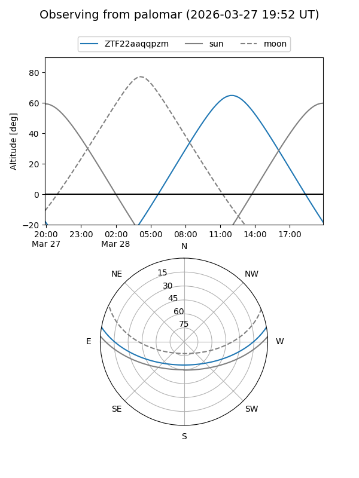

ZTF22aaqqpzm
Target ZTF22aaqqpzm at 2026-03-27 14:35
Aliases and brokers:
FINK: link
Lasair: link
ALeRCE: link
alt names
ZTF22aaqqpzm (ztf,fink_ztf)
Coordinates:
equatorial (ra, dec) = 248.7787,+8.40765
equatorial (HMS+DMS) = 16:35:06.89,+08:24:27.54
galactic (l, b) = (24.4191,+34.05762)
Flags:
Photometry:
last ztfg=18.34
1 ztfg detections
Lightcurve

Visibility


Additional plots